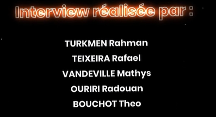
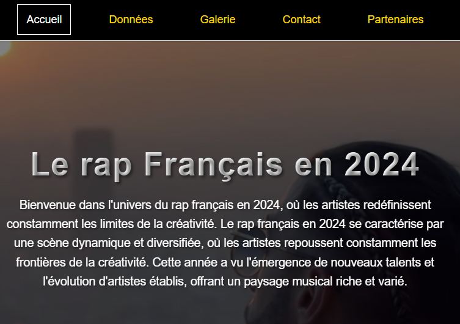
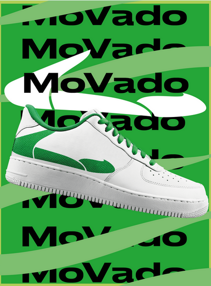
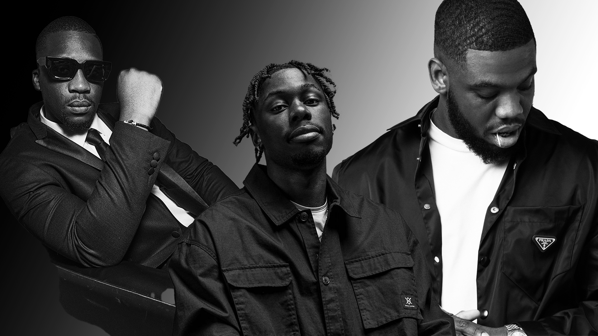

Projet 1 : Interview

Nous avons dû réaliser une interview sur une passion commune ou sur celle d'un membre du groupe.
Objectifs
- 1. CHOIX DU SUJET ET DU LIEU : La conception de notre interview sur la musculation a débuté par le choix du sujet, motivé par notre passion commune pour la musculation. Ensuite, nous avons sélectionné une salle de sport aux alentours de notre IUT comme lieu de tournage, afin d'offrir un cadre authentique et pertinent sans que l'on ait de gros problèmes de logistique.
- 2. AUTORISATIONS ET NÉGOCIATIONS : Avant de commencer le tournage, nous avons obtenu les autorisations nécessaires auprès du gérant de la salle. Cette étape cruciale a impliqué des négociations pour définir les conditions de tournage, les horaires, et les zones accessibles, tout en respectant la confidentialité des autres membres.
- 3. ÉLABORATION DU CONTENU ET DU SCRIPT : Pour le contenu de l'interview, nous avons élaboré un script mettant l'accent sur des aspects variés de la musculation, tels que les techniques d'entraînement, la nutrition, et les objectifs personnels. Nous avons veillé à inclure des démonstrations d'exercices pour rendre l'interview plus dynamique et informative.
- 4. FIGURANTS ET AMBIANCE : Nous avons également fait apparaître des figurants pour créer une ambiance naturelle et vivante. Leur présence a ajouté de l'authenticité à notre tournage. Nous devions également éviter de filmer les personnes qui s'entraînaient car nous n'avions pas le droit à l'image.
- 5. CADRAGE ET RESPECT DES DROITS : Concernant le cadrage, nous avons opté pour une variété de plans, alternant entre des plans larges pour montrer l'environnement de la salle et des plans plus serrés pour les explications détaillées. Nous avons été particulièrement vigilants à ne pas filmer les logos ou les noms de la salle de sport pour éviter tout problème de droits.
Technologies utilisées
Pour réaliser l'interview sur la musculation, nous avons eu la chance d'emprunter du matériel audiovisuel à l'IUT. Nous avons pu utiliser des caméras, des lumières et des micros de qualité pour capturer les meilleures images et sons possibles. Cet équipement nous a permis de créer une ambiance professionnelle et de garantir une excellente qualité d'enregistrement. Grâce à ces ressources, nous avons pu mener l'interview de manière efficace et capturer les détails importants de nos discussions. L'accès à ce matériel a été essentiel pour la réussite de notre projet, et nous sommes reconnaissants envers l'IUT pour son soutien.
Résultats
Le résultat final de notre projet d'interview sur la musculation a été extrêmement satisfaisant. Nous avons réussi à capturer des images de haute qualité grâce à l'équipement emprunté à l'IUT, ce qui a permis de mettre en valeur les détails importants de l'interview. Les plans variés, allant des gros plans aux plans larges, ont ajouté une profondeur visuelle à l'enregistrement, rendant le contenu plus engageant et dynamique. Le contenu de l'interview a parfaitement reflété nos objectifs initiaux, couvrant divers aspects de la musculation, des techniques d'entraînement à la nutrition et aux objectifs personnels. Les démonstrations d'exercices ont été particulièrement utiles pour illustrer les points clés, rendant l'interview à la fois informative et visuellement attrayante. Globalement, nous sommes fiers du résultat obtenu, qui combine une excellente qualité technique avec un contenu riche et pertinent, répondant parfaitement à nos attentes et à celles de notre public cible.
Projet 2 : Création d'un site internet

Création d'un site sur un sujet/passion de notre choix, mon choix s'est donc tourné vers la création d'un site sur le Rap Français en 2024
Objectifs
- 1. Recherche de l'identité visuelle : Pour mon site sur le rap français, je voulais absolument qu'il se démarque. J'ai commencé par analyser les sites existants comme Booska-P, Planete Rap et Clique pour voir ce qui marchait et ce que je pouvais faire différemment. Mon objectif était d'avoir une identité visuelle unique, mais aussi bien ancrée dans l'air du temps, structurée. Je me suis même inspiré des stratégies de branding des rappeurs pour leur image.
- 2. Navigation agréable et design attractif : Je voulais que la navigation soit agréable sur mon site. Pour ça, j'ai pensé utiliser des animations subtiles pour dynamiser l'interface sans la surcharger. Je réfléchissais à une palette de couleurs vives, mais pas trop criardes, pour refléter l'énergie du rap français. La structure du site devait être super intuitive, avec des menus clairs et une hiérarchie visuelle qui facilite la navigation. J'avais l'intention d'intégrer des éléments interactifs, comme des lecteurs audio ou des galeries d'images dynamiques pour que ce soit plus engageant. Et bien sûr, je m'assurais que le design soit responsive pour que le site soit parfait sur tous les appareils.
- 3. Optimisation des performances : Je ne voulais surtout pas que mon site soit lent et galère à charger. Donc, l'optimisation était primordiale. J'ai prévu de compresser les images sans perdre en qualité, d'utiliser des formats JPEG pour réduire la taille des fichiers. J'ai également pensé à implanter des vidéos, cependant la taille de la vidéo étaient trop élevé et ca aurait rendu la navigation moin fluide au détriment du visuelle tout en surchargant le serveur, j'ai donc abandonné l'idée. En suivant ces étapes, j'étais confiant de créer un site web sur le rap français qui claque visuellement, offre une super expérience utilisateur et reste fidèle à l'esprit du genre musical.
Technologies utilisées
HTML, CSS, JavaScript
Résultats
Le site final est un site web responsive qui présente un visuel agréable et une navigation facile. Il inclut une galerie, un tableau, et un formulaire de contact et une page partenaire. Le design est moderne et professionnel, avec une navigation fluide et une expérience utilisateur optimisée. Ce projet m'a permis de mettre en pratique mes compétences en développement front-end/ back-end .
Projet 3 : Création d'une marque de chaussure éco-responsable

Objectifs
- Le projet Movado V illustre une initiative ambitieuse visant à créer une marque de chaussures écoresponsable, alliant esthétique, durabilité et éthique. Conçue par un groupe d’étudiants engagés, cette marque repose sur les principes de la slow fashion, en s’opposant à la fast fashion et à ses effets néfastes sur l’environnement. Movado V privilégie des matériaux recyclés et biodégradables, une fabrication locale et éthique, ainsi qu’une transparence totale sur l’impact écologique de ses produits.
- Ma contribution au projet a porté sur l'analyse de marché, stratégie de communication, création de contenu, identité visuelle…]. Nous avons mis en place une stratégie digitale adaptée aux attentes des Millennials et de la Gen Z, en utilisant des plateformes comme TikTok, Instagram et YouTube, ainsi que des collaborations avec des influenceurs pour renforcer l’image de la marque.
- Enfin, Movado V cherche à se démarquer par des initiatives innovantes, telles que des chaussures personnalisables, un programme de fidélité écologique et des événements engagés, comme une marche solidaire où chaque kilomètre parcouru permet de planter un arbre. Grâce à une approche omnicanale et une vision à long terme, la marque aspire à devenir une référence dans le domaine des chaussures écoresponsables, tout en sensibilisant les consommateurs aux enjeux environnementaux.
Technologies utilisées
Canva, Photoshop
Résultats
Le projet Movado V a abouti à une marque de chaussures écoresponsable avec une identité forte, une stratégie digitale ciblée et des initiatives innovantes, démontrant l'impact d'une communication engagée et durable.
Projet 4 : Site sécurisé avec base de données

Dans la continuité de notre site sur le rap français, nous avons dû réaliser un second site internet, cette fois-ci sécurisé et connecté à une base de données que nous avons entièrement conçue nous-mêmes.
Objectifs
- 1. Reprise du thème : Nous avons choisi de retravailler sur le thème du rap français, pour approfondir notre première approche en y ajoutant des fonctionnalités dynamiques et plus complexes.
- 2. Création d'une base de données : Nous avons conçu une base de données relationnelle permettant de stocker des informations comme des profils utilisateurs, des artistes, des albums, ou encore des commentaires. Cela nous a permis de rendre notre site interactif et évolutif.
- 3. Sécurisation du site : Une attention particulière a été portée à la sécurité avec la mise en place de connexions sécurisées, la gestion des sessions, le hachage des mots de passe et la prévention contre les injections SQL.
- 4. Authentification : Un système d’inscription/connexion a été implémenté, permettant aux utilisateurs de s’identifier, de consulter du contenu personnalisé et d’interagir avec le site (commentaires, ajouts de contenu, etc.).
- 5. Création d'une section Administrateur où seul un admin peut modifier, supprimer, et ajouter un nouvel album ou rappeur dans la base de donnée.
- 6. Expérience utilisateur : Le design du site a été pensé pour rester fidèle à l’univers du rap tout en intégrant des fonctionnalités modernes comme la recherche dynamique, des fiches artistes alimentées via la base de données, ou encore des suggestions de contenus.
Technologies utilisées
HTML, CSS, PHP, MySQL, JavaScript
Résultats
Ce projet nous a permis de consolider nos compétences en développement full-stack. Le site est désormais capable de gérer une base d’utilisateurs, stocker et afficher dynamiquement des données, tout en respectant des normes de sécurité essentielles. Ce travail nous a préparés à concevoir des plateformes web robustes, évolutives et sécurisées dans un contexte professionnel.